Fun Projects for your LEGO® MINDSTORMS® NXT!
|
|
Fun Projects for your LEGO® MINDSTORMS® NXT! |
| Ball Hunter |
|

1-11
|
Start by building the Castor Bot. Click the picture for building instructions. |
|
|
12
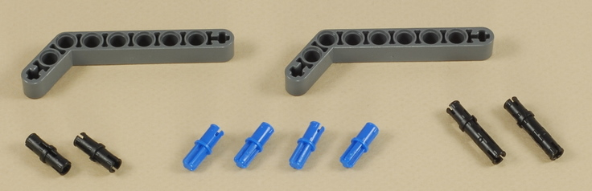

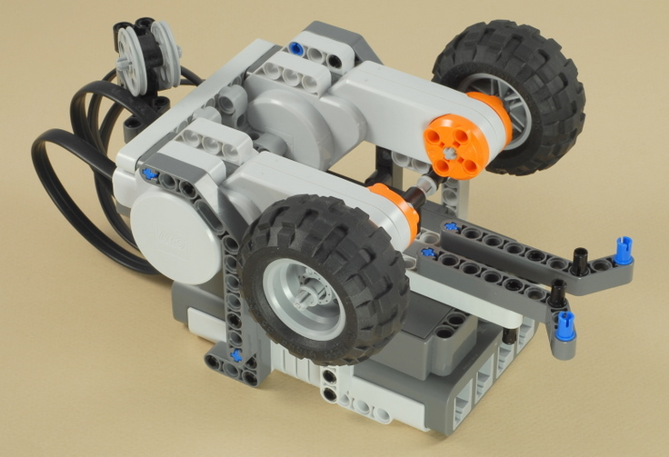
13
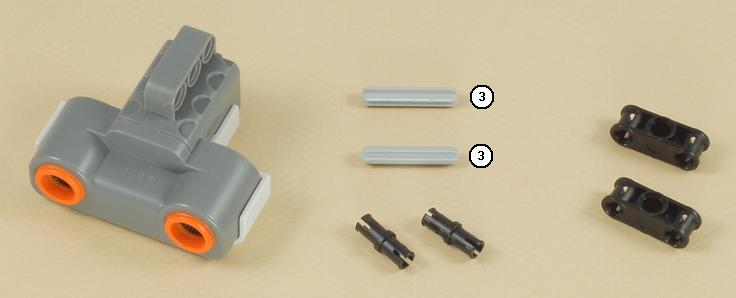
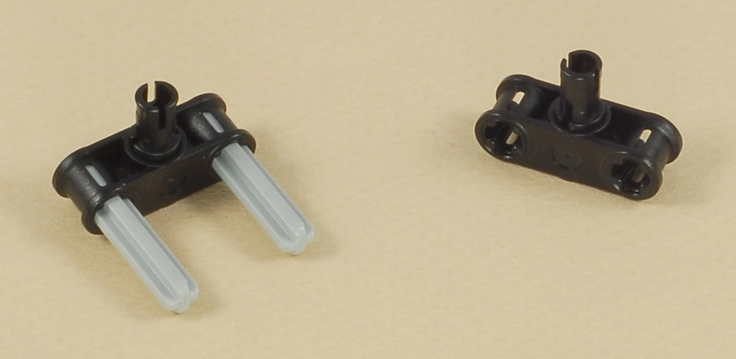
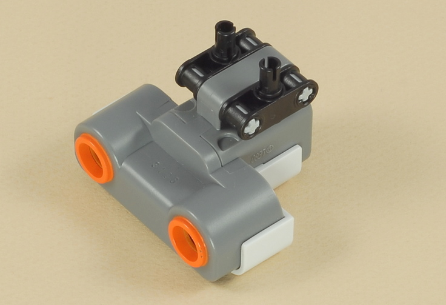
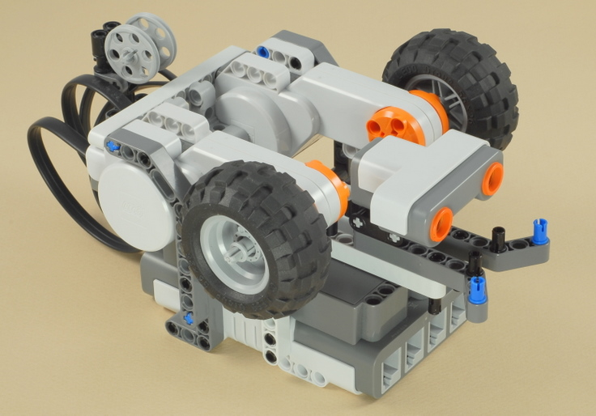
14
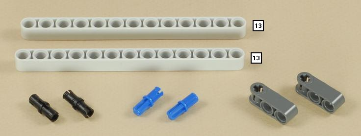
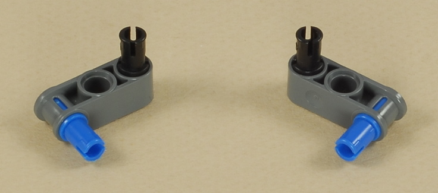
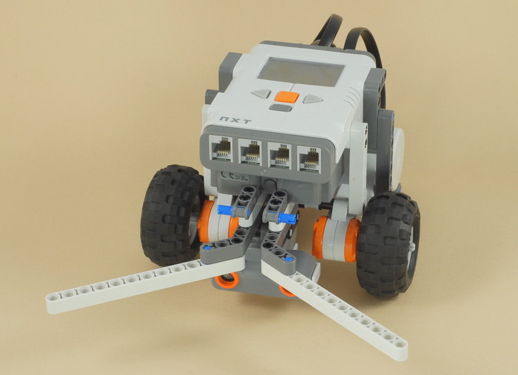
15
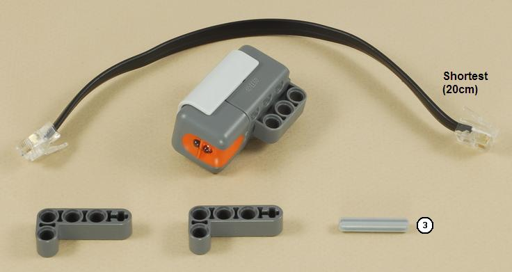
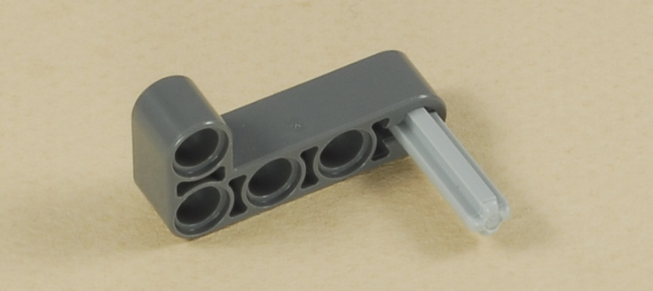
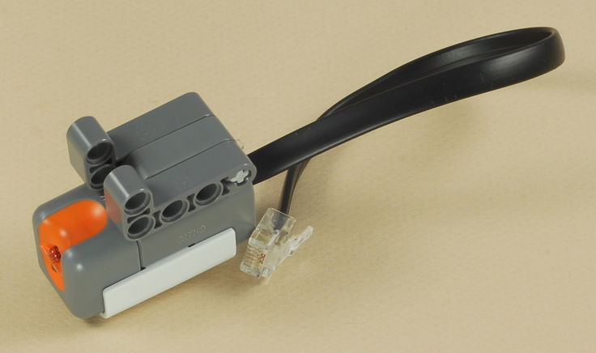
16
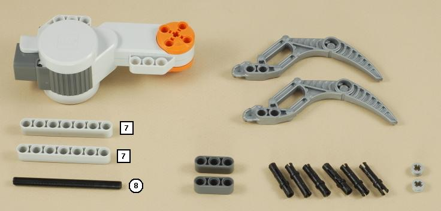
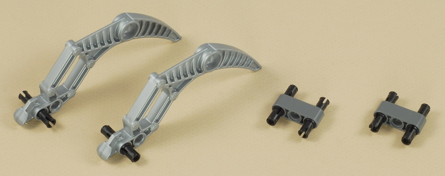
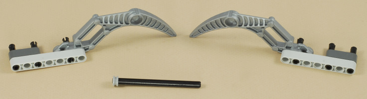
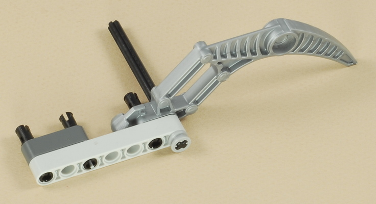
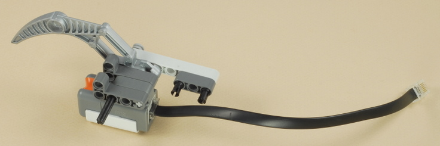
| Make sure the wire comes out on the top side of the motor as shown below. |
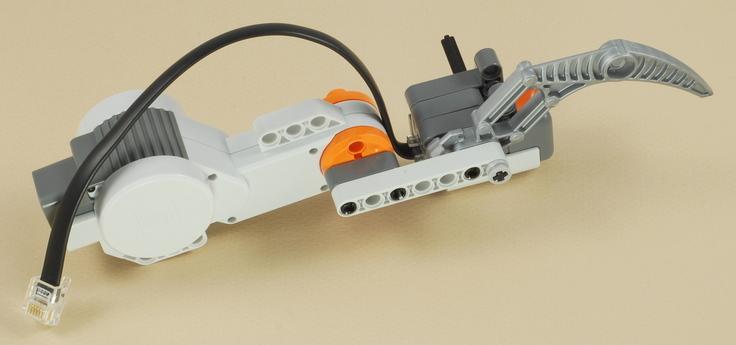
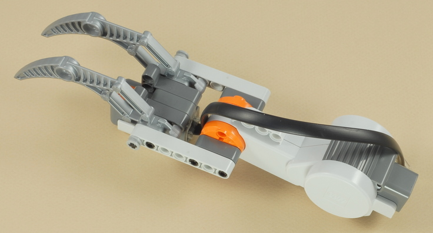
17
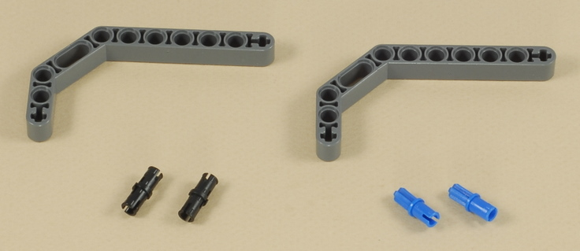
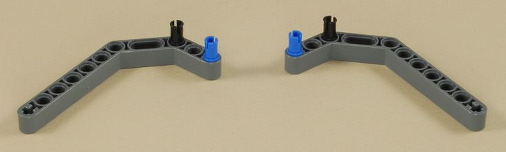
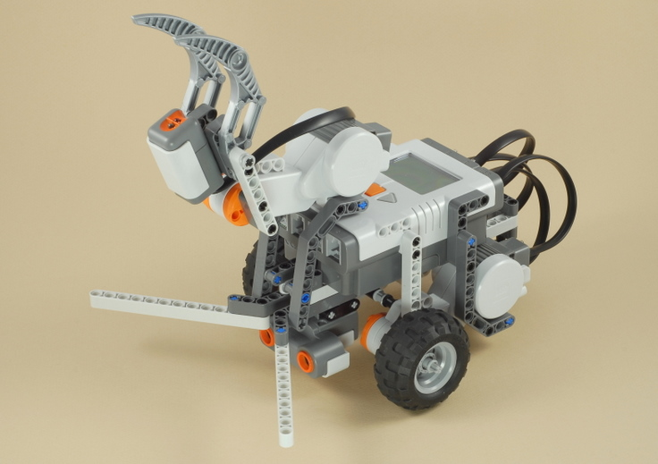
18
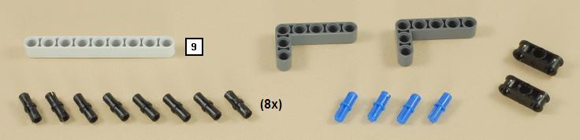
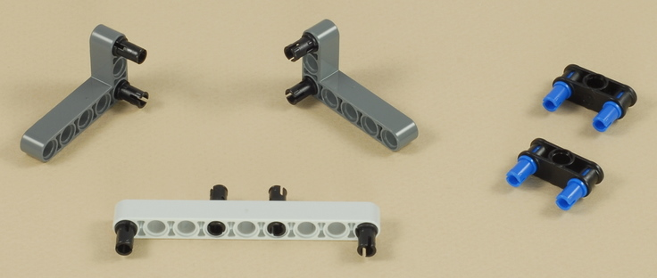
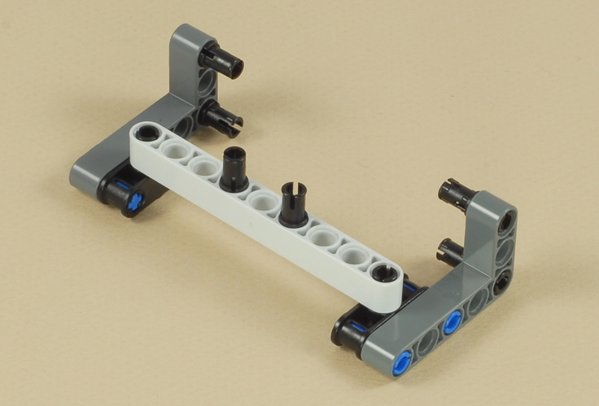
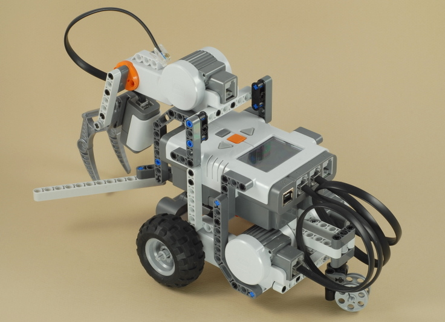
19
Connect the rest of the wires as follows and route
them as shown to keep them out of the way:
|
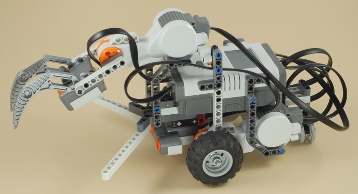
| Ball
Hunter Programming Use the program Ball_Hunt for the Ball Hunter. This program makes the robot do the following:
|
| The Ball Hunter will navigate more accurately on hard
floors, but the balls like to roll around like crazy on hard floors, so
short carpet works pretty well. In deep carpet, the wheels will
slip a lot and make the driving inaccurate. You could also use a
hard floor with something very small to keep the balls in place such as
placing them inside small rubber bands on the floor, but something like
a ball stand made out of LEGOs will be seen by the ultrasonic sensor
even if the ball is no longer there and confuse the program. |
|
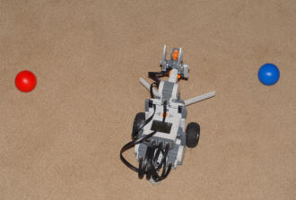 |
Challenges
|
|
Copyright
©
2007-2009 by Dave Parker. All rights reserved. |